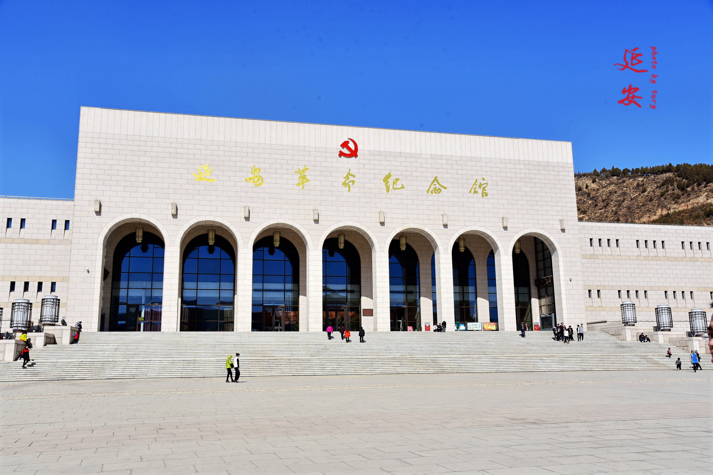

红色足迹是中国共产党的奋斗足迹，是中国人民的革命足迹，是中华民族的复兴足迹。从上海石库门到嘉兴南湖，从井冈山到延安，从西柏坡到北京，这一路走来，见证了中国共产党从小到大、从弱到强的辉煌历程。每一个红色足迹都承载着一段厚重的历史，每一处革命遗址都诉说着一段感人的故事。这些红色足迹不仅是历史的见证，更是精神的传承。追寻红色足迹，就是追寻我们党的初心和使命；缅怀革命先烈，就是传承红色基因、赓续红色血脉。今天，我们沿着红色足迹前行，就是要从历史中汲取智慧和力量，坚定理想信念，为实现中华民族伟大复兴的中国梦而拼搏奋斗。
追寻红色足迹
上海兴业路76号，1921年7月，中国共产党第一次全国代表大会在这里召开，宣告了中国共产党的正式成立。这是中国历史上开天辟地的大事变，从此中国革命的面貌焕然一新。
位于井冈山市茨坪，馆藏文物3万余件，文献资料2万余份，图片资料1万余张，全面展示了井冈山革命根据地的创建历程和井冈山精神的形成过程。

始建于1950年，馆藏文物3.5万余件，历史照片1万余张，图书1.3万余册，全面展示了党中央在延安十三年的光辉历程和伟大成就。